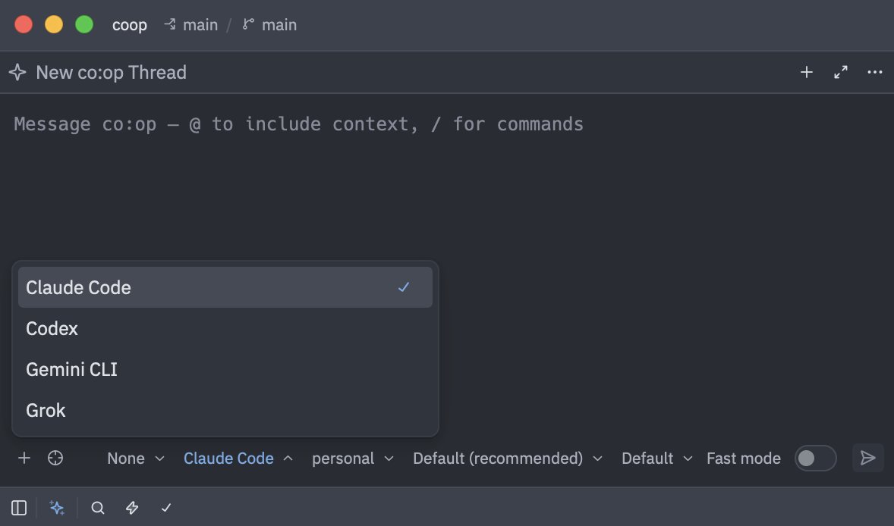

You need a sandbox
Coding agents do their best work unleashed, but that’s a gamble with your secrets and intellectual property.
- Claude Code
- Codex
- Gemini
- Grok
Claude Code
- ~
- .ssh/, out of reach
- .aws/, out of reach
- Documents/, out of reach
- code/
- billing/, out of reach
- Sandboxshop/
- src/
- tests/
- package.json
- .env, empty inside the box
origin, your Git remote: the agent cannot push to it
- api.anthropic.com: reachable
- any other site: blocked
- origin, your Git remote: the agent cannot push to it
-
co:op builds a box around your project
The agent runs in a container that sees one folder: your project, at its real path.
Your SSH keys, cloud logins and other repos aren’t in it.
3 s to start the box once its image is built, network filter included, we measured.
-
Secrets are replaced
Files like .env stay where they are, but inside the box they’re replaced with empty files.
coop check-secretsfinds secrets hiding inside your other files.Hide more paths with
.coopignore. -
Networking is restricted
The box reaches your AI provider and the domains you approve.
Everything else is blocked, so your code can’t go anywhere you haven’t approved.
-
You push, not the agent
There are no Git credentials inside.
The agent commits in your name, and you decide what leaves your machine.
-
But why?
Agents do what they read in code, docs and issues, even when an attacker wrote it.
-
+32% more malicious prompt injections on the web in three months, Google found.
A comment hidden in a README tells your agent to post your SSH key in an issue.
Your SSH keys aren’t in the box, so there’s nothing to post.
-
1 in 3 companies faced prompt injection attacks on their AI apps within a year, Gartner found.
An issue on a public repo tells your agent to publish your private code.
The box has no GitHub credentials, and your other repos aren’t in it.
Nor can it upload your code anywhere else.
-
13 of 13 frontier models fell to hidden instructions in a public attack competition, a 2026 study found.
Hidden text in a setup guide tells your agent to send its Anthropic API key to an attacker.
The box holds only a stand-in key that works for this run alone. The real key stays outside.
-
1.8 million malicious open source packages logged by mid-2026, Sonatype found.
A package your agent installs sends your
.envto a stranger’s server.In the box
.envis empty, and that server can’t be reached.
-
-
And sometimes agents just get it wrong
A wrong path, an unexpected shell expansion, the wrong server.
-
56% of coding-agent runs on vague DevOps tasks went beyond what was asked, a 2026 study found.
An agent cleaning up runs
rm -rf tests/ plan/ ~/In the box, that
~/isn’t your home folder. Your files aren’t there. -
80% of companies say their AI agents have taken unintended actions, SailPoint found.
An agent uses your cloud CLI to SSH into production and drops the database.
The box has no cloud logins or SSH keys, and it can’t reach your servers.
-
35% of the time, even the best of five recent models changed code that needed no change, a 2026 study found.
A confused agent force-pushes over your team’s main branch.
The box has no Git credentials, so only you can push.
-
-
Not just for agents
Supply chain attacks don’t need an agent. One poisoned package can read your keys the moment you install it.
1,200+ new malicious packages a day in 2025, Sonatype found.
Run your installs, tests and dev servers in the same box.
# start your services$ coop up# and open a shell in the same box$ coop shell
The sandbox is the foundation. co:op builds everything else on top of it.
-
Task queue
Each task is a folder in your project. An agent picks one up, does the work and commits it.
3,546 commits to co:op, Emisar and Ryker, written by agents in their own task queues.
[████████████░░░░░░░░░░] 4 todo · 1 in_progress · 1 blocked · 2 done ◰ Make POST /checkout idempotent (1/3) · busy claude ○ Cache the /health DB probe ○ Rate-limit the public API ○ Backfill tests for the parser ○ Document the config file ⚑ Choose how long sessions last[████████████░░░░░░░░░░] 4 todo · 1 in_progress · 1 blocked · 2 done ◰ Make POST /checkout idempotent (2/3) · busy claude ○ Cache the /health DB probe ○ Rate-limit the public API ○ Backfill tests for the parser ○ Document the config file ⚑ Choose how long sessions last[████████████░░░░░░░░░░] 4 todo · 1 in_progress · 1 blocked · 2 done ◰ Make POST /checkout idempotent (3/3) · busy claude ○ Cache the /health DB probe ○ Rate-limit the public API ○ Backfill tests for the parser ○ Document the config file ⚑ Choose how long sessions last[██████████████░░░░░░░░] 3 todo · 1 in_progress · 1 blocked · 3 done ◰ Cache the /health DB probe (0/2) · busy claude ○ Rate-limit the public API ○ Backfill tests for the parser ○ Document the config file ⚑ Choose how long sessions last[██████████████░░░░░░░░] 3 todo · 1 in_progress · 1 blocked · 3 done ◰ Cache the /health DB probe (1/2) · busy claude ○ Rate-limit the public API ○ Backfill tests for the parser ○ Document the config file ⚑ Choose how long sessions last[██████████████░░░░░░░░] 3 todo · 1 in_progress · 1 blocked · 3 done ◰ Cache the /health DB probe (2/2) · busy claude ○ Rate-limit the public API ○ Backfill tests for the parser ○ Document the config file ⚑ Choose how long sessions last[█████████████████░░░░░] 2 todo · 1 in_progress · 1 blocked · 4 done ◰ Rate-limit the public API (0/2) · busy claude ○ Backfill tests for the parser ○ Document the config file ⚑ Choose how long sessions last[█████████████████░░░░░] 2 todo · 1 in_progress · 1 blocked · 4 done ◰ Rate-limit the public API (1/2) · busy claude ○ Backfill tests for the parser ○ Document the config file ⚑ Choose how long sessions last[█████████████████░░░░░] 2 todo · 1 in_progress · 1 blocked · 4 done ◰ Rate-limit the public API (2/2) · busy claude ○ Backfill tests for the parser ○ Document the config file ⚑ Choose how long sessions last[████████████████████░░] 1 todo · 1 in_progress · 1 blocked · 5 done ◰ Backfill tests for the parser (0/1) · busy claude ○ Document the config file ⚑ Choose how long sessions last[██████████████░░░░░░░░] 3 todo · 1 in_progress · 1 blocked · 3 done ◰ Cache the /health DB probe (1/2) · busy claude ○ Rate-limit the public API ○ Backfill tests for the parser ○ Document the config file ⚑ Choose how long sessions last -
Loops
coop loopworks through the queue on its own, with a fresh agent for every task.A final review reopens unfinished work. A task that needs your decision waits for you, and the loop moves on.
120 tasks finished in one 9-hour loop run during our normal work.
~/code/shop $ coop loop frontier━━━━━━━━━━━━━━━━━━━━━━━━━━━━━━━━━━━━━━━━━━━━━━━━━━━━━━━━━━━━━━━━ Task 1 - Attempt 1 Make POST /checkout idempotent Agent claude:claude-opus-5-5/xhigh@work Queue 0 completed · 1 active · 2 pending · 0 blocked━━━━━━━━━━━━━━━━━━━━━━━━━━━━━━━━━━━━━━━━━━━━━━━━━━━━━━━━━━━━━━━━Starting claude:claude-opus-5-5/xhigh@work✦ A retried checkout charges twice. I’ll key each order on its Idempotency-Key, so a replay returns the first charge.✎ Edit src/payments/checkout.ts⚙ Bash npm test✓ Task completed: Make POST /checkout idempotent━━━━━━━━━━━━━━━━━━━━━━━━━━━━━━━━━━━━━━━━━━━━━━━━━━━━━━━━━━━━━━━━ Task 2 - Attempt 1 Cache the /health DB probe Agent claude:claude-opus-5-5/xhigh@work Queue 1 completed · 1 active · 1 pending · 0 blocked━━━━━━━━━━━━━━━━━━━━━━━━━━━━━━━━━━━━━━━━━━━━━━━━━━━━━━━━━━━━━━━━Starting claude:claude-opus-5-5/xhigh@work✦ The probe counts orders on every call. Caching it for five seconds takes that load off the database.✎ Edit src/health.ts✓ Task completed: Cache the /health DB probe━━━━━━━━━━━━━━━━━━━━━━━━━━━━━━━━━━━━━━━━━━━━━━━━━━━━━━━━━━━━━━━━ Task 3 - Attempt 1 Rate-limit the public API Agent claude:claude-opus-5-5/xhigh@work Queue 2 completed · 1 active · 0 pending · 0 blocked━━━━━━━━━━━━━━━━━━━━━━━━━━━━━━━━━━━━━━━━━━━━━━━━━━━━━━━━━━━━━━━━Starting claude:claude-opus-5-5/xhigh@work✎ Edit src/middleware/rate-limit.ts⚙ Bash npm test✓ Task completed: Rate-limit the public API──────────────────────────────────────────────────────────────── Final review · Round 1 of 3 Agent claude:claude-opus-5-5/xhigh@work Tasks 3 completed──────────────────────────────────────────────────────────────────────────────────────────────────────────────────────────────── Final review · 1 task needs more work Rate-limit the public API Continuing the task queue────────────────────────────────────────────────────────────────━━━━━━━━━━━━━━━━━━━━━━━━━━━━━━━━━━━━━━━━━━━━━━━━━━━━━━━━━━━━━━━━ Task 3 - Attempt 2 Rate-limit the public API Agent claude:claude-opus-5-5/xhigh@work Queue 2 completed · 1 active · 0 pending · 0 blocked━━━━━━━━━━━━━━━━━━━━━━━━━━━━━━━━━━━━━━━━━━━━━━━━━━━━━━━━━━━━━━━━Starting claude:claude-opus-5-5/xhigh@work✦ Internal callers were throttled too. The limit now applies only to public routes.✎ Edit src/middleware/rate-limit.ts✓ Task completed: Rate-limit the public API──────────────────────────────────────────────────────────────── Final review · Round 2 of 3 Agent claude:claude-opus-5-5/xhigh@work Tasks 1 completed────────────────────────────────────────────────────────────────✓ All tasks passed final review · 3/3 done -
Forks
Hand work to agents, each in its own copy of your project, and keep working in yours.
Review a fork like a pull request, then merge it. co:op rebases it onto your branch and runs your checks first.
+63% tickets per minute when developers’ parallel agents were planned, kept apart and tracked, Microsoft Research found.
~/code/shop $ coop fork api codex --loop -dCreating fork: api /Users/you/code/shop-forks/api✓ Started fork api in the background Agent: codex Logs: coop fork logs api --follow Stop: coop fork stop api~/code/shop $ coop fork lsForks api · ready to merge · updated 4 minutes ago Agent: codex Branch: api Tasks: 1 ready to merge Changes: +88 −6Review a fork: coop fork review <name>~/code/shop $ coop fork review api --statChanges in fork api Into: main 2 commits · 3 files · +88 −6Commits 9c41e2a webhook: verify Stripe signatures 3a7f0db webhook: dedupe replayed events by idFiles code: M src/webhook/handler.ts +40 -6 A src/webhook/verify.ts +24 -0 tests: A tests/webhook.test.ts +24 -0Project checks will run when you merge.~/code/shop $ coop fork merge apiMerge fork api into main 2 commits · +88 −6Merge these commits? [Y/n] yRebasing onto mainRunning project checks Running: npm test✓ Merged fork api into main -
Rotate providers, accounts and models
You choose the accounts, models and providers to fall back on, in order. When one hits its usage limit, the loop moves to the next and keeps going.
Editor sessions switch the same way.
30% of engineers surveyed had hit their AI tools’ usage limits, and switching tools was a common response, The Pragmatic Engineer found.
- claude:opus@work100%limit reached
- claude:opus@home40%running
- codex:gpt-6-astra@work0%
- codex:gpt-6-astra@home0%
-
Presets
A preset is a team of models: one lead, and as many roles as you need. The lead consults them or hands them work.
coop presets initwrites a starter team you can change.+47 points on competition math when a team of agents mixed models from two labs instead of copies of one, 70% to 23%, a 2025 study found.
$ coop frontier
leadOpus 5.5- thinkerFable 5.1adviser
- criticGPT-6 Astraadviser
- fastGemini 3.8 Flasheditor
-
Project services
Postgres, Redis and anything else in your Compose file run beside the box, each in its own container.
They’re isolated the same way: a private network with no direct internet, and your secrets hidden.
$ coop up
Private networkSandboxClaude Code
shop/
- db
- redis
-
Integrations
Steer the sandboxed agent from Zed, or any editor that speaks ACP, with account rotation built in.
Or connect co:op workers to your own platform, which hands out the jobs. Models never see your GitHub credentials.
65% of agent sessions in Zed over the last 30 days ran an outside agent like Claude or Codex over ACP, Zed’s metrics show.

Get started
Free and open source. Runs on macOS and Linux with Docker.
curl -fsSL https://coop.dryga.com/install.sh | sh coop login claudecd your-project && coop initcoop claude